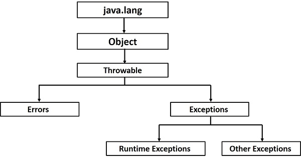

Java - Exceptions
An exception (or exceptional event) is a problem that arises during the execution of a program. When an Exception occurs the normal flow of the program is disrupted and the program/Application terminates abnormally, which is not recommended, therefore, these exceptions are to be handled.
An exception can occur for many different reasons. Following are some scenarios where an exception occurs.
A user has entered an invalid data.
A file that needs to be opened cannot be found.
A network connection has been lost in the middle of communications or the JVM has run out of memory.
Some of these exceptions are caused by user error, others by programmer error, and others by physical resources that have failed in some manner.
Based on these, we have three categories of Exceptions. You need to understand them to know how exception handling works in Java.
Checked exceptions − A checked exception is an exception that occurs at the compile time, these are also called as compile time exceptions. These exceptions cannot simply be ignored at the time of compilation, the programmer should take care of (handle) these exceptions.
For example, if you use FileReader class in your program to read data from a file, if the file specified in its constructor doesn't exist, then a FileNotFoundException occurs, and the compiler prompts the programmer to handle the exception.
Example
import java.io.File;
import java.io.FileReader;
public class FilenotFound_Demo {
public static void main(String args[]) {
File file = new File("E://file.txt");
FileReader fr = new FileReader(file);
}
}
If you try to compile the above program, you will get the following exceptions.
Output
C:\>javac FilenotFound_Demo.java
FilenotFound_Demo.java:8: error: unreported exception FileNotFoundException; must be caught or declared to be thrown
FileReader fr = new FileReader(file);
^
1 error
Note − Since the methods read() and close() of FileReader class throws IOException, you can observe that the compiler notifies to handle IOException, along with FileNotFoundException.
Unchecked exceptions − An unchecked exception is an exception that occurs at the time of execution. These are also called as Runtime Exceptions. These include programming bugs, such as logic errors or improper use of an API. Runtime exceptions are ignored at the time of compilation.
For example, if you have declared an array of size 5 in your program, and trying to call the 6th element of the array then an ArrayIndexOutOfBoundsExceptionexception occurs.
Example
public class Unchecked_Demo {
public static void main(String args[]) {
int num[] = {1, 2, 3, 4};
System.out.println(num[5]);
}
}
If you compile and execute the above program, you will get the following exception.
Output
Exception in thread "main" java.lang.ArrayIndexOutOfBoundsException: 5 at Exceptions.Unchecked_Demo.main(Unchecked_Demo.java:8)
Errors − These are not exceptions at all, but problems that arise beyond the control of the user or the programmer. Errors are typically ignored in your code because you can rarely do anything about an error. For example, if a stack overflow occurs, an error will arise. They are also ignored at the time of compilation.
Exception Hierarchy
All exception classes are subtypes of the java.lang.Exception class. The exception class is a subclass of the Throwable class. Other than the exception class there is another subclass called Error which is derived from the Throwable class.
Errors are abnormal conditions that happen in case of severe failures, these are not handled by the Java programs. Errors are generated to indicate errors generated by the runtime environment. Example: JVM is out of memory. Normally, programs cannot recover from errors.
The Exception class has two main subclasses: IOException class and RuntimeException Class.
Following is a list of most common checked and unchecked Java's Built-in Exceptions.
Exceptions Methods
Following is the list of important methods available in the Throwable class.
| Sr.No. | Method & Description |
|---|---|
| 1 | public String getMessage() Returns a detailed message about the exception that has occurred. This message is initialized in the Throwable constructor. |
| 2 | public Throwable getCause() Returns the cause of the exception as represented by a Throwable object. |
| 3 | public String toString() Returns the name of the class concatenated with the result of getMessage(). |
| 4 | public void printStackTrace() Prints the result of toString() along with the stack trace to System.err, the error output stream. |
| 5 | public StackTraceElement [] getStackTrace() Returns an array containing each element on the stack trace. The element at index 0 represents the top of the call stack, and the last element in the array represents the method at the bottom of the call stack. |
| 6 | public Throwable fillInStackTrace() Fills the stack trace of this Throwable object with the current stack trace, adding to any previous information in the stack trace. |
Catching Exceptions
A method catches an exception using a combination of the try and catch keywords. A try/catch block is placed around the code that might generate an exception. Code within a try/catch block is referred to as protected code, and the syntax for using try/catch looks like the following −
Syntax
try {
// Protected code
}catch(ExceptionName e1) {
// Catch block
}
The code which is prone to exceptions is placed in the try block. When an exception occurs, that exception occurred is handled by catch block associated with it. Every try block should be immediately followed either by a catch block or finally block.
A catch statement involves declaring the type of exception you are trying to catch. If an exception occurs in protected code, the catch block (or blocks) that follows the try is checked. If the type of exception that occurred is listed in a catch block, the exception is passed to the catch block much as an argument is passed into a method parameter.
Example
The following is an array declared with 2 elements. Then the code tries to access the 3rd element of the array which throws an exception.
// File Name : ExcepTest.java
import java.io.*;
public class ExcepTest {
public static void main(String args[]) {
try {
int a[] = new int[2];
System.out.println("Access element three :" + a[3]);
}catch(ArrayIndexOutOfBoundsException e) {
System.out.println("Exception thrown :" + e);
}
System.out.println("Out of the block");
}
}
This will produce the following result −
Output
Exception thrown :java.lang.ArrayIndexOutOfBoundsException: 3 Out of the block
Multiple Catch Blocks
A try block can be followed by multiple catch blocks. The syntax for multiple catch blocks looks like the following −
Syntax
try {
// Protected code
}catch(ExceptionType1 e1) {
// Catch block
}catch(ExceptionType2 e2) {
// Catch block
}catch(ExceptionType3 e3) {
// Catch block
}
The previous statements demonstrate three catch blocks, but you can have any number of them after a single try. If an exception occurs in the protected code, the exception is thrown to the first catch block in the list. If the data type of the exception thrown matches ExceptionType1, it gets caught there. If not, the exception passes down to the second catch statement. This continues until the exception either is caught or falls through all catches, in which case the current method stops execution and the exception is thrown down to the previous method on the call stack.
Example
Here is code segment showing how to use multiple try/catch statements.
try {
file = new FileInputStream(fileName);
x = (byte) file.read();
}catch(IOException i) {
i.printStackTrace();
return -1;
}catch(FileNotFoundException f) // Not valid! {
f.printStackTrace();
return -1;
}
Catching Multiple Type of Exceptions
Since Java 7, you can handle more than one exception using a single catch block, this feature simplifies the code. Here is how you would do it −
catch (IOException|FileNotFoundException ex) {
logger.log(ex);
throw ex;
The Throws/Throw Keywords
If a method does not handle a checked exception, the method must declare it using the throws keyword. The throws keyword appears at the end of a method's signature.
You can throw an exception, either a newly instantiated one or an exception that you just caught, by using the throw keyword.
Try to understand the difference between throws and throw keywords, throws is used to postpone the handling of a checked exception and throw is used to invoke an exception explicitly.
The following method declares that it throws a RemoteException −
Example
import java.io.*;
public class className {
public void deposit(double amount) throws RemoteException {
// Method implementation
throw new RemoteException();
}
// Remainder of class definition
}
A method can declare that it throws more than one exception, in which case the exceptions are declared in a list separated by commas. For example, the following method declares that it throws a RemoteException and an InsufficientFundsException −
Example
import java.io.*;
public class className {
public void withdraw(double amount) throws RemoteException,
InsufficientFundsException {
// Method implementation
}
// Remainder of class definition
}
The Finally Block
The finally block follows a try block or a catch block. A finally block of code always executes, irrespective of occurrence of an Exception.
Using a finally block allows you to run any cleanup-type statements that you want to execute, no matter what happens in the protected code.
A finally block appears at the end of the catch blocks and has the following syntax −
Syntax
try {
// Protected code
}catch(ExceptionType1 e1) {
// Catch block
}catch(ExceptionType2 e2) {
// Catch block
}catch(ExceptionType3 e3) {
// Catch block
}finally {
// The finally block always executes.
}
Example
public class ExcepTest {
public static void main(String args[]) {
int a[] = new int[2];
try {
System.out.println("Access element three :" + a[3]);
}catch(ArrayIndexOutOfBoundsException e) {
System.out.println("Exception thrown :" + e);
}finally {
a[0] = 6;
System.out.println("First element value: " + a[0]);
System.out.println("The finally statement is executed");
}
}
}
This will produce the following result −
Output
Exception thrown :java.lang.ArrayIndexOutOfBoundsException: 3 First element value: 6 The finally statement is executed
Note the following −
A catch clause cannot exist without a try statement.
It is not compulsory to have finally clauses whenever a try/catch block is present.
The try block cannot be present without either catch clause or finally clause.
Any code cannot be present in between the try, catch, finally blocks.
The try-with-resources
Generally, when we use any resources like streams, connections, etc. we have to close them explicitly using finally block. In the following program, we are reading data from a file using FileReader and we are closing it using finally block.
Example
import java.io.File;
import java.io.FileReader;
import java.io.IOException;
public class ReadData_Demo {
public static void main(String args[]) {
FileReader fr = null;
try {
File file = new File("file.txt");
fr = new FileReader(file); char [] a = new char[50];
fr.read(a); // reads the content to the array
for(char c : a)
System.out.print(c); // prints the characters one by one
}catch(IOException e) {
e.printStackTrace();
}finally {
try {
fr.close();
}catch(IOException ex) {
ex.printStackTrace();
}
}
}
}
try-with-resources, also referred as automatic resource management, is a new exception handling mechanism that was introduced in Java 7, which automatically closes the resources used within the try catch block.
To use this statement, you simply need to declare the required resources within the parenthesis, and the created resource will be closed automatically at the end of the block. Following is the syntax of try-with-resources statement.
Syntax
try(FileReader fr = new FileReader("file path")) {
// use the resource
}catch() {
// body of catch
}
}
Following is the program that reads the data in a file using try-with-resources statement.
Example
import java.io.FileReader;
import java.io.IOException;
public class Try_withDemo {
public static void main(String args[]) {
try(FileReader fr = new FileReader("E://file.txt")) {
char [] a = new char[50];
fr.read(a); // reads the contentto the array
for(char c : a)
System.out.print(c); // prints the characters one by one
}catch(IOException e) {
e.printStackTrace();
}
}
}
Following points are to be kept in mind while working with try-with-resources statement.
To use a class with try-with-resources statement it should implement AutoCloseable interface and the close() method of it gets invoked automatically at runtime.
You can declare more than one class in try-with-resources statement.
While you declare multiple classes in the try block of try-with-resources statement these classes are closed in reverse order.
Except the declaration of resources within the parenthesis everything is the same as normal try/catch block of a try block.
The resource declared in try gets instantiated just before the start of the try-block.
The resource declared at the try block is implicitly declared as final.
User-defined Exceptions
You can create your own exceptions in Java. Keep the following points in mind when writing your own exception classes −
All exceptions must be a child of Throwable.
If you want to write a checked exception that is automatically enforced by the Handle or Declare Rule, you need to extend the Exception class.
If you want to write a runtime exception, you need to extend the RuntimeException class.
We can define our own Exception class as below −
class MyException extends Exception {
}
You just need to extend the predefined Exception class to create your own Exception. These are considered to be checked exceptions. The following InsufficientFundsException class is a user-defined exception that extends the Exception class, making it a checked exception. An exception class is like any other class, containing useful fields and methods.
Example
// File Name InsufficientFundsException.java
import java.io.*;
public class InsufficientFundsException extends Exception {
private double amount;
public InsufficientFundsException(double amount) {
this.amount = amount;
}
public double getAmount() {
return amount;
}
}
To demonstrate using our user-defined exception, the following CheckingAccount class contains a withdraw() method that throws an InsufficientFundsException.
// File Name CheckingAccount.java
import java.io.*;
public class CheckingAccount {
private double balance;
private int number;
public CheckingAccount(int number) {
this.number = number;
}
public void deposit(double amount) {
balance += amount;
}
public void withdraw(double amount) throws InsufficientFundsException {
if(amount <= balance) {
balance -= amount;
}else {
double needs = amount - balance;
throw new InsufficientFundsException(needs);
}
}
public double getBalance() {
return balance;
}
public int getNumber() {
return number;
}
}
The following BankDemo program demonstrates invoking the deposit() and withdraw() methods of CheckingAccount.
// File Name BankDemo.java
public class BankDemo {
public static void main(String [] args) {
CheckingAccount c = new CheckingAccount(101);
System.out.println("Depositing $500...");
c.deposit(500.00);
try {
System.out.println("\nWithdrawing $100...");
c.withdraw(100.00);
System.out.println("\nWithdrawing $600...");
c.withdraw(600.00);
}catch(InsufficientFundsException e) {
System.out.println("Sorry, but you are short $" + e.getAmount());
e.printStackTrace();
}
}
}
Compile all the above three files and run BankDemo. This will produce the following result −
Output
Depositing $500...
Withdrawing $100...
Withdrawing $600...
Sorry, but you are short $200.0
InsufficientFundsException
at CheckingAccount.withdraw(CheckingAccount.java:25)
at BankDemo.main(BankDemo.java:13)
Common Exceptions
In Java, it is possible to define two catergories of Exceptions and Errors.
JVM Exceptions − These are exceptions/errors that are exclusively or logically thrown by the JVM. Examples: NullPointerException, ArrayIndexOutOfBoundsException, ClassCastException.
Programmatic Exceptions − These exceptions are thrown explicitly by the application or the API programmers. Examples: IllegalArgumentException, IllegalStateException.